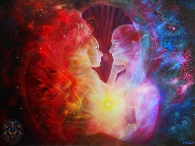

El potencial de la meditación
La meditación es un medio para enfocar la atención hasta lograr una concentración en nuestra interioridad.
Es la capacidad de poder fluir con el exterior sin que influya en la quietud y a la vez movimiento de la respiración.
A través de la meditación se podrá conectar con el cuerpo escuchando y sintiendo las sensaciones, o conectar con la "mente en blanco" dejando fluir los pensamientos sin mantener la atención en ninguno de éstos, o por el contrario, escuchar esos pensamientos rumiantes para poder desde una posición "distante" comprender en dónde estamos enfocando la energía o qué es lo que estamos permitiendo que transcurra en nuestro inconsciente/subconsciente para hacerlo consciente y aceptar o modificar el origen.
Éstas alternativas forman parte de la técnica MINDFULLNESS.
Otra de las posibles funciones de esta gran herramienta que conforma la meditación es la visualización.
A través de la visualización se puede acceder al poder de la manifestación.
La visualización de aquello que deseamos, es decir, el experimentar el deseo cómo si ya fuese real, sentir y creer que lo es, llevará a que alineemos nuestro sentir, pensar y accionar en pos a esa visualización, sensaciones, sentires que experimentamos durante la meditación. Lo cual conducirá innevitablemente a la concreción en lo que llamamos realidad tangible de la visualización realizada.
Es importante la paciencia y tolerancia para con uno mismo. Comprender que requiere de constancia en la puesta en practica de la técnica; pero saber que está a nuestra entera disposición.
La complementariedad
Nuestra energía emocional, cognitiva o intencional ya sea consciente o insconsciente es algo que constantemente está embistiendo las proyecciones e interpretaciones que realizamos sobre los acontecimientos, escenas e historias en nuestra existencia.
Siempre que damos, recibimos. Puede provenir de la misma entidad a la que dimos cómo no. A veces lo que damos, luego lo recibimos por otros medios.
La importancia de este conocimiento es la practica de la consciencia en cómo estamos intencionando nuestro dar. Un dar condicionado, con pretenciones, con expectativas, con ilusiones, con "negatividades" provocará un efecto rebote de recibir eso mismo.
Con dar me refiero al simple existir, estamos dando energía y respuestas al ambiente constantemente. La mayoría de las respuestas están condicionadas por nuestras experiencias de aprendizaje, nuestra cultura y el cómo hemos interpretado las distintas experiencias que hemos experimentado.
Aquí radica la importancia de reevaluar nuestras perspectivas para empezar a emanar y dar aquello que deseamos recibir.

Relaciones conscientes
Venimos con propósitos y caminos individuales para contribuir a un colectivo.
Partiendo de esta premisa, el amor verdadero es aquel que es en consonancia con la libertad, el crecimiento y la evolución.
Relaciones conscientes son aquellas complementarias y afines al propósito a manifestar, generando las conexiones desde la alquimia divina. La conexión desde el alma y energía, la transparencia, el respeto y comprensión.
Las relaciones conscientes son aquellas con quienes compartir la vida, con las que la comunicación sea desde el alma y haya comprensión y honestidad.
La prioridad siempre es y será el respeto de la propia evolución, que priori forma parte de la evolución total.
Verdad interior
Muchas son las normas que mencionan, muchas las reglas para contenernos en un mismo molde.
Animarse a cuestionar los mandatos y crear los propios.
Desde los gustos, la manera de alimentarse, vincularse y hasta de amar. El propio paradigma financiero e incluso la propia forma de descansar.
Los sueños y la forma de moverse por la vida es tan única cómo único es el individuo. Es cada individuo completo en si mismo y contribuye desde esa unicidad a un colectivo común. Es la unicidad la que pluraliza y diversifica el colectivo, enriqueciendolo con las diferentes formas de concebir el vivir.
Crear la propia definición incluso de palabras institucionalizadas cómo familia y amistad. Y la visión de esa vida "ideal" para manifestarla en la realidad tangible.
Felicidad
Cada une tiene su propia concepción de lo que denomina Felicidad.
A modo de compartir, para mí, felicidad es encontrar el equilibrio y armonía, en el interior, con las personas que nos rodean y con nuestro entorno. Es decir, es ARMONÍA EN ACCIÓN.
La opción de armonía es una opción de tranquilidad, lo que quiere decir paz en vez de conflicto,confianza en vez de miedo, y valores en vez de juicio, es una opción que puedes elegir en cada momento.
Eres la fuente de todas tus soluciones, nadie puede ser una amenaza para ti. El vivir en las altas energías de amor y aceptación atrae gente que te apoyará en vez de amenazarte. Cuando te niegas a aceptar a los demás, estás cediendo tu poder. En ese momento tu energía dice: “tienes la capacidad de ponerme enojado o temeroso, tienes el poder sobre mi”.Pero cuando tomas la decisión de aceptar a los demás, entonces recuperas tu poder. Tomas el control de tus emociones y tus energías, creando una consciencia más alta y llena de paz, la cual te permite alinearte con el flujo de la intención Universal.
Tu decisión de aceptar a los demás demuestra que estás dispuesto a trabajar en conjunto para traer armonía a ti mismo, a los otros y al mundo. La verdadera armonía se logra cuando percibes a los demás con compasión. Cuando vemos a los demás con humanidad y consciencia nuestra empatía abre el flujo armónico. Esto crea un profunda y alegre unificación energética, una armonía de compresión que aumenta tu propia vibración y de todos los involucrados.